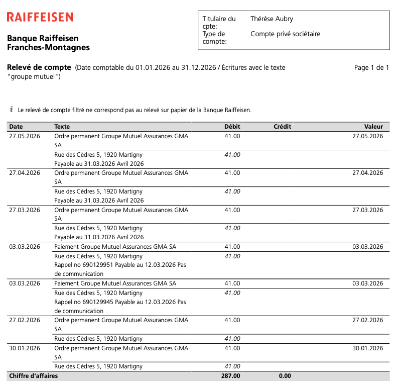
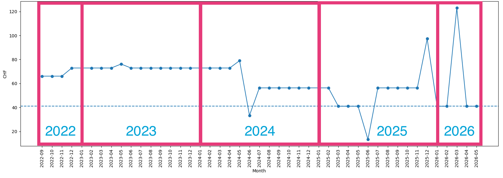
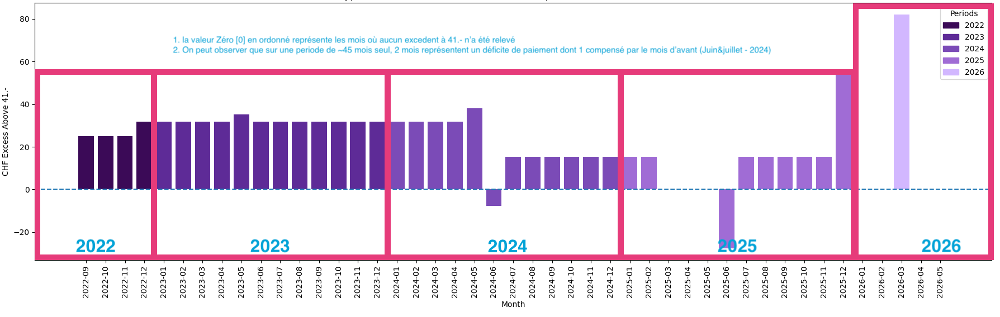

Dossier de contestation — Groupe Mutuel
Position du dossier
Ce document fait suite aux rappels et frais de sommation contestés reçus malgré la présence de paiements mensuels récurrents visibles sur le relevé bancaire.
Après plusieurs appels téléphoniques et différentes procédures suivies conformément aux instructions communiquées, les anomalies persistent. L’objectif de ce dossier n’est pas d’affirmer une surfacturation certaine, mais de démontrer l’existence possible d’un problème d’imputation, de suivi administratif ou de synchronisation des paiements.
Le point central est simple : des paiements réguliers apparaissent de manière continue sur plusieurs années, tandis que des rappels et sommations continuent malgré cela à être générés.
Déclencheur du présent dossier
Le présent dossier fait directement suite à une sommation pour primes impayées datée du 27 mai 2026, adressée à Madame Thérèse Aubry.
- N° partenaire : 2402440
- N° de facture : 682813009
- N° de sommation : 698859959
- Période réclamée : 01.03.2026 – 31.03.2026
- Prime réclamée : CHF 41.00
- Frais de sommation : CHF 30.00
- Montant total demandé : CHF 71.00, payable avant le 10 juin 2026
Or, le relevé bancaire montre précisément pour mars 2026 plusieurs paiements à destination de Groupe Mutuel, dont des paiements de CHF 41.00. C’est donc cette sommation, et en particulier les frais de CHF 30.00, qui motive la présente contestation.
Élément complémentaire — paiements janvier et février 2026
À la suite de notre appel téléphonique avec Groupe Mutuel du 29 Mai 26 à 16h, il nous a été indiqué que les paiements de janvier 2026 et février 2026 n’apparaissaient pas dans leurs systèmes internes.
Les captures ci-dessous documentent les paiements correspondants à janvier et février, chacun d’un montant de CHF 41.00, avec la même référence de paiement. Si la même reference pour deux paiements à induits une interference dans votre systèmes il en resulte donc des excédents à injecter aux mois qui suivent.
- Janvier 2026 : paiement CHF 41.00 exécuté le 30.01.2026
- Février 2026 : paiement CHF 41.00 exécuté le 27.02.2026



Ce relevé exporté directement depuis Raiffeisen confirme la présence des paiements suivants dans l’historique bancaire :
- 30.01.2026 — CHF 41.00
- 27.02.2026 — CHF 41.00
- 03.03.2026 — CHF 41.00 ×2 (rappels)
- 27.03.2026 — CHF 41.00
- 27.04.2026 — CHF 41.00
- 27.05.2026 — CHF 41.00
Ce document vient compléter les captures individuelles précédentes et démontre que les paiements de
janvier et février 2026 existaient bien dans l’historique bancaire au moment de l’export.
Aperçu des comptes
Contexte important concernant les montants observés
- Les montants d’environ CHF 15.30 visibles sur de nombreuses périodes correspondent fréquemment à la prime du fils : Térence Michel Mebenga Bidima.
- La période allant de septembre 2022 à mai 2024 inclut également la prime du mari : Jacques Aubry.
- Le décès de Jacques Aubry en mai 2024 explique une partie importante de la diminution progressive des montants observés :
- ≈ CHF 72.90
- ≈ CHF 56.30
- ≈ CHF 41.00
- Le contrat du fils ayant ensuite été résilié en novembre 2025, cela explique le retour à une base proche de CHF 41.00 pour Madame Thérèse Aubry.
Visualisation chronologique
Les graphiques ci-dessous utilisent une base hypothétique prudente de CHF 41.00 afin de visualiser les écarts observés au fil du temps.


N = 36 représente le nombre de mois où le montant visible dépasse la base hypothétique de CHF 41.00.
Constats exploitables
- La période visible est continue de septembre 2022 à mai 2026.
- Des paiements récurrents apparaissent chaque mois sans interruption majeure visible.
- Des rappels et sommations apparaissent malgré ces paiements réguliers.
- Le mois de mars 2026 affiche CHF 123.00 de paiements visibles sur un seul mois.
- Décembre 2025 et mars 2026 constituent les anomalies les plus importantes.
- Les montants évoluent dans le temps de manière cohérente avec les changements familiaux et contractuels connus.
Demande formelle
Nous demandons une explication écrite, détaillée et vérifiable concernant :
- l’imputation de chaque paiement ;
- les rappels et sommations émis malgré les paiements visibles ;
- les changements de montants observés ;
- les éventuelles erreurs d’attribution, de référence ou de rattachement de contrat.
Nous demandons également :
- le décompte complet du contrat depuis septembre 2022 ;
- la justification détaillée de chaque rappel et sommation, en particulier la sommation n° 698859959 du 27 mai 2026 ;
- l’annulation des frais de sommation de CHF 30.00 si le paiement de mars 2026 a bien été reçu ou mal imputé ;
- la correction des rappels injustifiés ;
- le remboursement de tout montant payé en trop si l’examen le confirme.